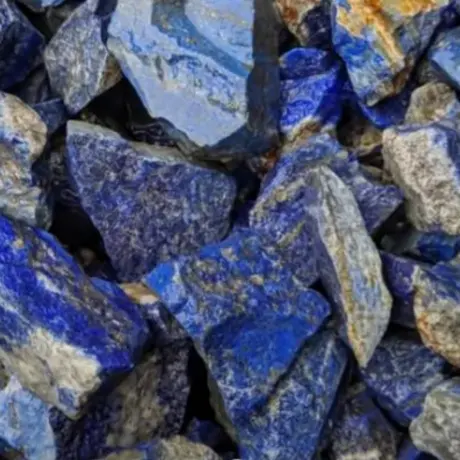
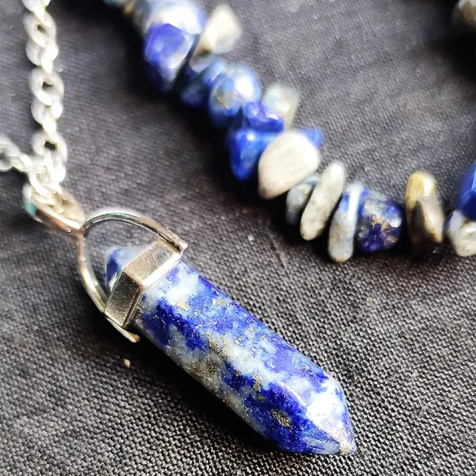
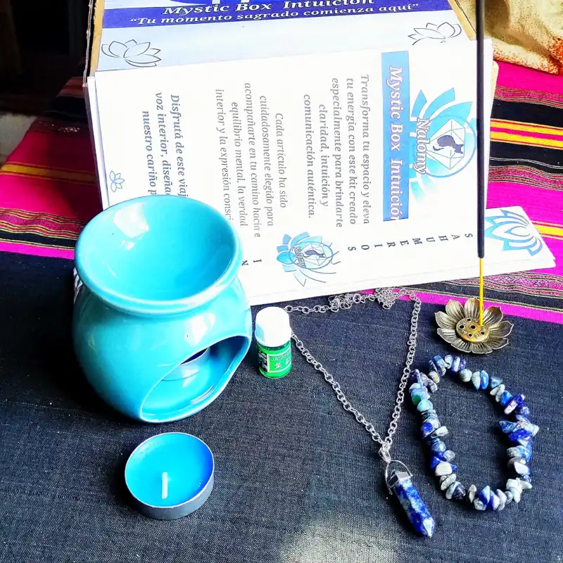
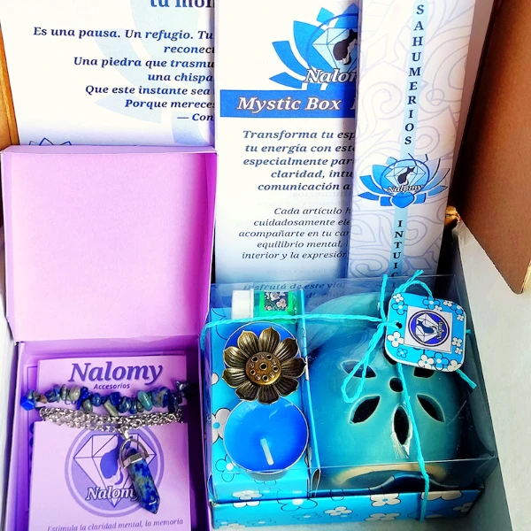
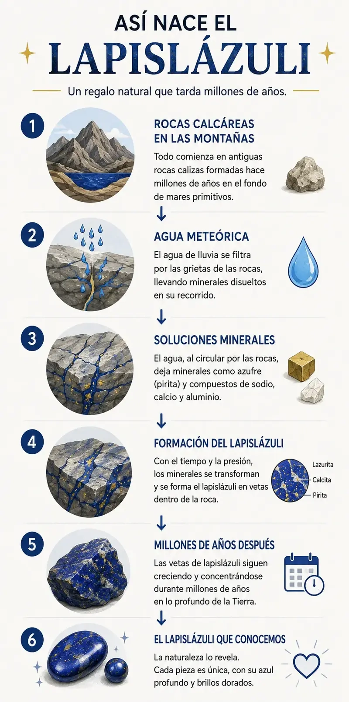
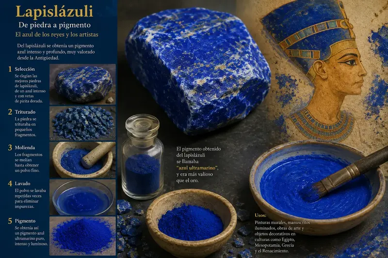

Cada piedra tiene su propia historia, sus asociaciones
y los significados que distintas tradiciones le han dado
a lo largo del tiempo. But también existe algo más personal,
la conexión que cada persona establece con ella.
Puedes elegir una piedra por lo que representa,
por su belleza, por su historia o simplemente porque
sentiste que era la indicada.
No hay una única forma de conectar con una piedra.
Explora, descubre y déjate llevar por la piedra
que más te atraiga.
Lapislázuli: significado, propiedades y uso
Lapislázuli en bruto

En bruto puede mostrar una mezcla de azul intenso, zonas claras y pequeños destellos dorados de pirita.
Lapislázuli pulido

Al pulirse, su azul adquiere una profundidad especialmente intensa y sus pequeñas inclusiones quedan todavía más visibles.
¿Qué es el lapislázuli y por qué nos atrae?
El lapislázuli es una roca, no un mineral individual.
Está formada principalmente por lazurita y puede contener otros minerales como calcita, pirita, haüyna, diópsido, wollastonita y escapolita, dependiendo del yacimiento.
La lazurita es el componente mineral relacionado con su característico color azul, mientras que la calcita forma vetas claras y la pirita aporta destellos dorados.
Por eso no existen dos piezas de lapislázuli exactamente iguales; cada una guarda una combinación irrepetible de azul, blanco y dorado.
Cada ejemplar funciona como una pequeña historia geológica atrapada dentro de la piedra.
El lapislázuli es una roca compuesta por varios minerales —principalmente lazurita, calcita y pirita—, célebre desde la antigüedad por su vibrante azul ultramarino y su simbolismo asociado a la sabiduría, la claridad y la expresión interior.
Ideal si buscas claridad mental, potenciar la comunicación sincera, conectar con tu sabiduría interior o regalar un símbolo de crecimiento y significado profundo.
En el mundo de los cristales se la asocia especialmente con la sabiduría, la claridad, la expresión y la conexión interior.
Significado espiritual del lapislázuli
Dentro de distintas tradiciones espirituales y del mundo de los cristales, el lapislázuli se asocia tradicionalmente con la sabiduría, la claridad, la comunicación y la conexión interior.
Sabiduría: Muchas personas lo eligen como símbolo de aprendizaje continuo, búsqueda de comprensión y expansión del conocimiento.
Claridad: Se relaciona con la intención de mirar hacia dentro, ordenar pensamientos dispersos y encontrar una visión interior nítida.
Expresión: Tradicionalmente se vincula con la comunicación sincera, la confianza en la propia voz y la capacidad de expresar lo que sentimos.
En algunas tradiciones modernas se le relaciona de manera simbólica con el tercer ojo y el chakra garganta, sirviendo como puente entre la intuición y la palabra.
Puedes incorporarlo a tus espacios o prácticas personales colocándolo en tu mesa de trabajo, zona de lectura o sosteniéndolo durante tus momentos de pausa.

Detalle de las texturas, el azul profundo y las inclusiones doradas de pirita en el lapislázuli.
Cómo usar el lapislázuli en tu día a día
En joyería: Llevarlo contigo en collares o pulseras lo convierte en un recordatorio cercano de aquello que quieres cultivar o expresar.
En tus rituales: Puedes incorporarlo en altares o espacios dedicados a la introspección junto a sahumerios y aromas afines.
Meditación: Sostén una pieza entre tus manos mientras realizas respiraciones conscientes para aquietar la mente y sintonizar con tu centro.
En el hogar: Colócalo en tu estudio, rincón de trabajo o sala para fomentar un ambiente de calma reflexiva y enfoque mental.

Cómo cuidar el lapislázuli
El lapislázuli tiene una dureza aproximada de 5 a 6 en la escala de Mohs, lo que significa que es un material más blando que el cuarzo y puede rayarse con cierta facilidad.
Para su limpieza rutinaria, utiliza un paño suave y ligeramente húmedo, secándolo bien a continuación para preservar su brillo natural.
Si la llevas como joya de uso diario y pierde brillo por el sudor o el uso frecuente, seguí el método de limpieza detallado en nuestra Guía Nalomy .
Evita el contacto con productos químicos agresivos, perfumes, cosméticos, inmersiones prolongadas en agua y cambios térmicos bruscos.
Protégelo de la humedad excesiva y guárdalo siempre en un compartimento separado o saquito de tela para evitar fricciones con piedras más duras.
Recuerda que dureza no significa indestructibilidad .
¿Es el lapislázuli lo que buscas?
Para ti: Si buscas un recordatorio físico de claridad mental, reflexión, autenticidad y el deseo de expresar tu propia verdad sin filtros.
Para regalar: Es un obsequio perfecto para personas que inician una etapa de aprendizaje, nuevos proyectos, crecimiento personal o que valoran la conexión espiritual y el arte.
Si has llegado hasta aquí y sientes que no es exactamente lo que buscas, puedes consultar nuestra tabla Tabla comparativa con el resto de las piedras con las que trabajamos para ayudarte a encontrar la indicada.
Nuestro sentir en Nalomy
A veces no necesitamos que alguien nos diga qué decir. Solo necesitamos encontrar dentro de nosotros lo que ya queríamos expresar.
El lapislázuli nos fascina porque parece guardar mundos enteros en su interior: milenios de historia humana, travesías comerciales y el profundo azul de las montañas. En Nalomy lo elegimos como el corazón de nuestra Mystic Box Intuición.
Pero esta es nuestra elección, no una regla. Si personalizas tu Mystic Box, puedes elegir otras piedras según lo que quieras expresar, regalar o simplemente porque una piedra te atraiga más.
No creemos que una piedra tenga que hacer el trabajo por ti. Nos gusta pensarla como un recordatorio de aquello que quieres cuidar o cultivar en ese momento.

Preguntas frecuentes sobre el lapislázuli
¿Se puede dormir con el lapislázuli puesto?
Sí, no hay contraindicación para usarlo mientras duermes. Muchas personas lo eligen para acompañar momentos de descanso o introspección nocturna, aunque si es un collar largo puede resultar incómodo — en ese caso, puedes dejarlo cerca de tu almohada o mesa de luz.
¿Cómo saber si el lapislázuli es auténtico?
El lapislázuli auténtico presenta variaciones naturales en su tono azul, vetas irregulares de calcita blanca y pequeñas inclusiones metálicas de pirita dorada distribuidas de manera única. Las imitaciones suelen ser demasiado uniformes o carecen de la textura mineralógica natural propia de esta roca metamórfica.
¿Se puede mojar el lapislázuli?
El lapislázuli es una roca porosa y relativamente blanda (con una dureza de 5 a 6 en la escala de Mohs). No se recomienda sumergirlo en agua durante períodos prolongados, ni utilizar productos químicos agresivos, baños de sal marina o limpiadores ultrasónicos, ya que su superficie podría dañarse o perder brillo. Lo ideal es limpiarlo con un paño suave y ligeramente húmedo.
¿Es una buena piedra para regalar a alguien que no conoce de cristales?
Sí, es una de las piedras más reconocibles por su color azul intenso, lo que la hace fácil de apreciar incluso sin conocer su significado. Además, su historia y su vínculo con la sabiduría y la comunicación la convierten en un regalo con contenido, no solo estético.
Lleva el lapislázuli contigo
El lapislázuli puede acompañarte como símbolo de claridad, expresión y conexión interior, convirtiéndose en un recordatorio cercano de aquello que quieres cultivar en tu camino.
Descubrir Mystic Box Intuición¿Quieres saber más?
Un recorrido fascinante por su origen geológico, su condición de roca y su prolongado trayecto a través de las civilizaciones humanas.
¿Cómo nace el lapislázuli?
El lapislázuli se forma mediante procesos metamórficos, cuando las rocas existentes experimentan intensas transformaciones debido a la presión, la temperatura y la interacción con fluidos geológicos.
En el famoso yacimiento de Sar-e-Sang, en Badakhshan (Afganistán), la roca se originó asociada a entornos ricos en carbonatos.
En Chile, en cambio, su formación respondió a procesos de metamorfismo de contacto en antiguas rocas calcáreas seguidos de alteración hidrotermal.
Dos regiones separadas por miles de kilómetros lograron dar vida a una misma roca portadora de azul mediante historias geológicas completamente diferentes.
El mismo azul universal nacido de distintas entrañas terrestres.

Y aquí aparece la magia del lapislázuli
Su magia radica en la caprichosa combinación de minerales que la naturaleza ensambló sin intervención humana: vetas blancas, destellos dorados y océanos de azul profundo.
Ninguna pieza es idéntica a otra; la imprevisibilidad de sus inclusiones convierte a cada fragmento en una pieza de colección irrepetible.
Algunas piedras no solamente cuentan cómo se formaron. También cuentan por dónde pasaron.

Una piedra con historia
La relación entre la humanidad y el lapislázuli se remonta a miles de años, viajando desde las minas de Badakhshan hasta las lujosas tumbas reales de Ur en Mesopotamia.
En el antiguo Egipto fue altamente valorado para confeccionar amuletos, joyas funerarias y cosméticos rituales.
En Chile, su peso cultural es tan indiscutible que fue declarado oficialmente Piedra Nacional de Chile mediante el Decreto N.º 62 del Ministerio de Minería en 1984.
Durante el Renacimiento europeo, el lapislázuli fue finamente molido para extraer el codiciado pigmento de azul ultramarino natural, utilizado por los grandes maestros de la pintura.
Una roca extraída de altas montañas que terminó eternizada en las obras maestras del arte mundial.
El eco milenario de una piedra que trascendió el tiempo y el arte.
Fuentes y referencias
Para elaborar esta guía consultamos fuentes gemológicas, científicas, históricas y organismos oficiales cuando corresponde.
- Gemological Institute of America (GIA). Información sobre composición, color, dureza, características y procedencia del lapislázuli. Ver fuente
- Servicio Nacional de Geología y Minería de Chile (SERNAGEOMIN). Información sobre la presencia y producción del lapislázuli en Chile. Ver fuente
- Andean Geology — Universidad de Chile. Investigación sobre la mineralogía y génesis del yacimiento Flor de los Andes, Coquimbo, Chile. Ver estudio
- Biblioteca del Congreso Nacional de Chile. Decreto N.º 62 del Ministerio de Minería, que declara al lapislázuli Piedra Nacional de Chile. Ver fuente